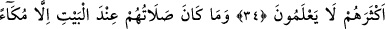
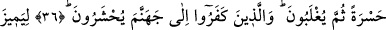

MÜŞRİKLERİN
YANLIŞ DAVRANIŞLARI
31. Onlara âyetlerimiz okunduğu zaman: “İşittik, istesek biz de bunun benzerini
söyleriz. Bu öncekilerin masallarından başka bir şey değildir.” dediler.
32. Yine: “Ey Allah’ım, eğer bu senin katından gelmiş gerçekse üzerimize gökten
taş yağdır yahut bize elem verici bir azap getir!” dediler.
33. Halbuki sen onların içinde iken Allah onlara azab edecek değildi. Ve onlar
istiğfar ederlerken de Allah onlara azab edecek değildir.
34. Onlar Mescid-i Haram’dan menederlerken ve onun velîsi (bakıcısı,
koruyucusu) olmadıkları halde neden Allah onlara azâb etmesin? Onun velîleri
sadece (şirkten) sakınanlardır. Fakat onların çoğu bilmez.
35. Onların Beyt yanındaki duaları da ıslık çalmak ve el çırpmaktan başka bir şey
değildir. İnkar ettiğinizden ötürü şimdi azabı tadın!